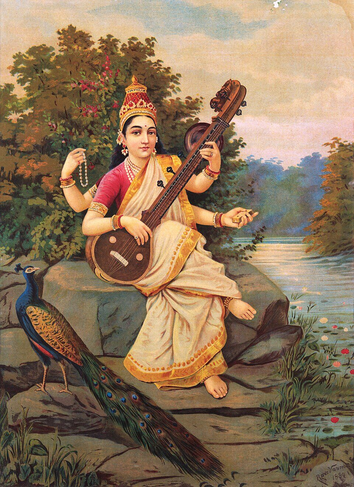
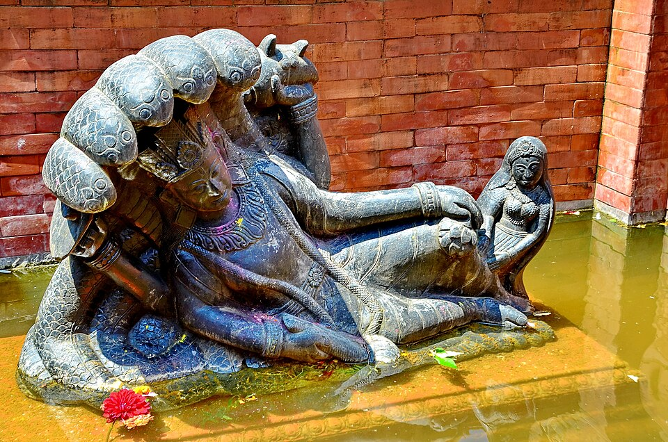
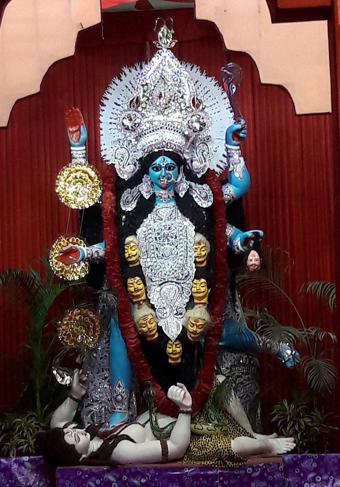
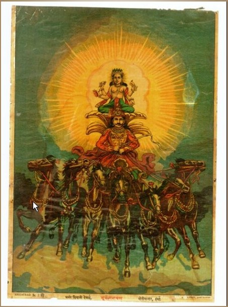
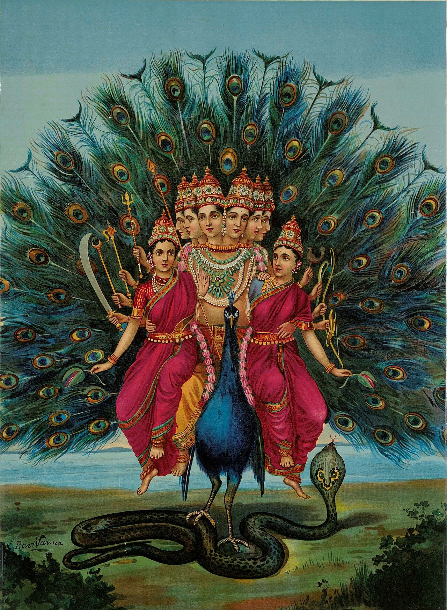

Krishna श्रीकृष्ण
The guide of the Gita: duty, love, and the restless mind.

Ganesha गणेश
Remover of obstacles; beginnings, study, steady effort.

Shiva शिव
Stillness, discipline, letting go, meditation.

Hanuman हनुमान्
Strength, courage, and selfless service.

Lakshmi लक्ष्मी
Prosperity, gratitude, right livelihood.

Saraswati सरस्वती
Learning, music, speech, clarity of thought.

Durga दुर्गा
Protection, inner strength, facing fear.

Rama राम
Duty, honour, family, keeping your word.

Vishnu विष्णु
Preservation, patience, trust through change.

Kali काली
The fierce Mother: truth, time, transformation.

Surya सूर्य
Health, discipline, daily renewal.

Murugan मुरुगन்
Focus, courage, victory over inner demons.
Replies are AI-generated in each deity's voice, grounded in scripture with citations - a devotional experience, not a replacement for a guru or tradition. Images: temple photography from Wikimedia Commons under free licenses (credit on each card), plus two images shared by the site's founder.